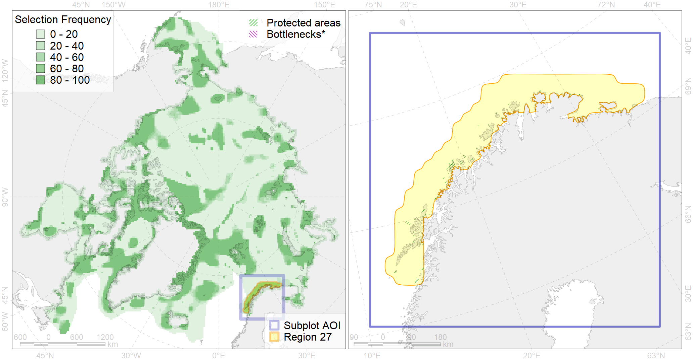

Region 27
Region 27
“ArcNet” scenario 33 achievement for region 27.
Use Accenter for advanced mode.

0
CFs inside of Region completely
13
CFs inside of Region at quarter
19
Complete-targets achievement by Region
34
Half-targets achievement by Region
| CF | Name | Target Achievement for Region | Proportion of Target Achievement in Region | Amount Proportion in Region |
|---|---|---|---|---|
| 7051 | cold corals of the Barents Sea | 137.1% | 92.1% | 76.9% |
| 6021 | Long-tailed duck (Clangula hyemalis) North East Atlanticwintering grounds | 92.4% | 92.1% | 75.7% |
| 6024 | Yellow-billed loon (Gavia adamsii) Atlantic winetring grounds | 152.7% | 92.5% | 72.0% |
| 4081 | Fish zoogeography, Atlantic Boreal Region, high-boreal district of the Eastern Atlantic subregion | 333.0% | 92.7% | 67.2% |
| 4067 | Spawning areas of the Atlantic capelin (Mallotus villosus) (F 10) | 317.8% | 96.4% | 65.0% |
| 6070 | King eider (Somateria spectabilis) Atlantic winetring grounds | 159.9% | 93.7% | 64.4% |
| 7249 | seagrasses of Norway | 192.0% | 91.8% | 61.8% |
| 4002 | Boreal fish complex of the Barents region | 945.3% | 92.7% | 61.7% |
| 6068 | Common eider (Somateria mollissima mollissima) Murman and Norway wintering grounds | 90.3% | 86.5% | 56.3% |
| 7073 | I.1.3.1. Deep stratified fjords | 109.4% | 92.1% | 48.6% |
| 4066 | Feeding/nursery area of the Atlantic cod (Gadus morhua ) (F 39) | 725.7% | 89.3% | 47.7% |
| 7234 | Kelp forests of Norway | 249.7% | 87.4% | 44.6% |
| 6044 | Stellers eider (Polysticta stelleri) Atlantic wintering grounds | 75.1% | 72.5% | 43.6% |
| 2017 | Grey seal distribution range | 361.3% | 50.8% | 23.9% |
| 4068 | Migration area of European Eel (Anguilla anguilla) (F5): | 90.2% | 49.3% | 23.5% |
| 4087 | Fish zoogeography, Arctic Region, Subarctic Transitional-Atlantic Province, Murman – Spitsbergen aquatory of the Barents District | 94.5% | 59.2% | 19.3% |
| 5067 | Minke whale feeding areas in the Northeast Atlantic | 141.4% | 43.6% | 18.6% |
| 4060 | Spawning area of the Greenland Halibut (Reinhardtius hippoglossoides) (F 49) | 110.6% | 78.5% | 15.9% |
| 6047 | Black-legged kittiwake (Rissa tridactyla pollicarius) breeding colonies | 19.1% | 16.4% | 13.8% |
| 7064 | I.1.1.1. Coastal domain in the Barents Sea | 145.4% | 20.6% | 12.8% |
| 7247 | seagrasses of the High Arctic | 37.9% | 20.8% | 12.5% |
| 5053 | Harbour porpoise feeding areas in the Barents Sea | 87.2% | 52.2% | 11.7% |
| 5061 | Humpback whale summer feeding areas in Norway | 89.1% | 24.9% | 11.5% |
| 4069 | Spawning areas of the Atlantic herring (Clupea harengus) (F6) | 157.7% | 23.7% | 10.9% |
| 5113 | Sperm whale summer feeding areas in Atlantic | 65.6% | 55.4% | 10.8% |
| 7070 | I.1.2.1. Barents western slope | 54.8% | 25.8% | 10.1% |
| 7231 | Kelp forests of Murmansk coast | 45.2% | 16.1% | 8.9% |
| 4054 | Range of the Shorthorn Sculpin (Myoxocephalus scorpius) (F 46), European populations | 231.3% | 16.9% | 7.7% |
| 4030 | Feeding area of the Arctic charr (Salvelinus alpinus), anadromous populations (F28) | 18.2% | 15.9% | 7.6% |
| 5051 | Fin whale summer feeding areas in Norway | 26.7% | 19.5% | 7.6% |
| 5099 | White-beaked dolphin feeding area in the Eastern North Atlantic | 54.9% | 19.7% | 7.2% |
| 6099 | 6099 Rissa tridactyla tridactyla breeding colonies | 9.2% | 9.2% | 6.6% |
| 4027 | Feeding/migration area of the Atlantic salmon (Salmo salar) American populations (F27) | 26.7% | 18.3% | 6.0% |
| 4057 | Range of the American Plaice (Hippoglossoides platessoides) (F 47), American populations | 159.2% | 14.4% | 5.3% |
| 4094 | Subarctic fish complex of the Barents region | 78.9% | 14.6% | 5.2% |
| 4049 | Range of the Haddock (Melanogrammus aeglefinus) (F 42) | 74.6% | 11.9% | 4.9% |
| 6106 | 6106 Urilomvilomvibreeding colonies | 9.0% | 6.6% | 4.8% |
| 5064 | Killer whale summer feeding areas in the North East Atlantic | 63.3% | 10.6% | 4.5% |
| 6004 | Little Auk (Alle alle polaris) wintering grounds | 22.9% | 12.8% | 4.5% |
| 7067 | I.1.1.4. Shelf troughs | 133.3% | 21.4% | 4.3% |
| 6049 | Black-legged kittiwake (Rissa tridactyla tridactyla) wintering grounds | 11.0% | 11.0% | 3.9% |
| 7066 | I.1.1.3. Shelf plains | 98.3% | 8.1% | 3.9% |
| 4052 | Range of the Fourhorn Sculpin (Myoxocephalus quadricornis) (F 45), American populations | 120.1% | 8.3% | 3.8% |
| 4046 | Range of the Thorny Skate (Amblyraja radiata) (F 3) | 32.2% | 6.0% | 2.6% |
| 6043 | Stellers eider (Polysticta stelleri) Atlantic moulting&migration stopovers | 4.1% | 2.9% | 2.4% |
| 4045 | Feeding/migration area of the Pink Salmon (Oncorhynchus gorbuscha), native distribution (F23) | 34.6% | 5.6% | 2.3% |
| 6082 | Thick-billed murre (Uria lomvia lomvia) breeding colonies | 3.0% | 2.5% | 2.2% |
| 6083 | Thick-billed murre (Uria lomvia lomvia) wintering grounds | 7.9% | 5.5% | 2.1% |
| 6023 | Atlantic puffin (Fratercula arctica naumanni) wintering grounds | 7.6% | 6.1% | 2.0% |
| 4003 | Range of the Atlantic Capelin (Mallotus villosus) (F10) | 59.4% | 5.0% | 2.0% |
| 4017 | Feeding/ migration area of the Greenland Shark (Somniosus microcephalus) (F1) | 8.0% | 4.7% | 1.9% |
| 7069 | I.1.1.5.2. Moderate (>100 m) shelf banks | 19.0% | 16.7% | 1.9% |
| 7265 | Barents and Kara Sea Throughs | 25.5% | 8.8% | 1.3% |
| 6061 | Common eider (Somateria mollissima mollissima) SE Barents and Kara Sea breeding&moulting grounds | 2.0% | 1.8% | 1.2% |
| 7072 | I.1.2.3. Slope canyons | 3.5% | 2.5% | 0.9% |
| 4032 | Range of the Arctic skate (Amblyraja hyperborea) (F2) | 18.4% | 1.4% | 0.6% |
| 5007 | Beluga of the Barents-Kara-Laptev Sea stock general distribution | 0.8% | 0.5% | 0.2% |
| 4041 | Range of the Polar Cod (Boreogadus saida) (F35) | 1.6% | 0.6% | 0.2% |
| 4059 | Range of the Greenland Halibut (Reinhardtius hippoglossoides) (F 49) | 3.3% | 0.3% | 0.1% |
| 4058 | Range of the Arctic flounder (Liopsetta glacialis) (F48) | 1.2% | 0.1% | 0.1% |
| 4079 | Fish zoogeography, Arctic Region, Arctic Abyssal Province (11A -Scandian, 11B - Central-Arctic and 11C - Baffin Deep-sea Districts ) | 2.0% | 0.3% | 0.1% |